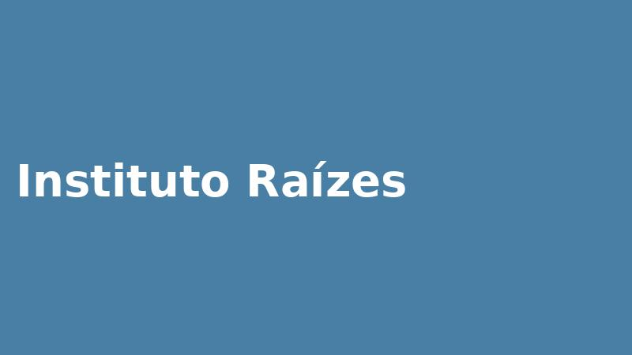

Instituto Raízes
Quem somos

Somos uma organização sem fins lucrativos que atua desde 2015 em comunidades de Fortaleza, com foco em educação, moradia digna e geração de renda.
Missão e valores
Missão
Fortalecer famílias em situação de vulnerabilidade por meio de projetos educativos e de apoio à moradia.
Valores
- Transparência na prestação de contas
- Respeito à comunidade
- Trabalho em rede
Nossos números
Famílias atendidas e voluntários ativos a cada ano desde 2022.
Fale conosco
Rua das Flores, 120, Benfica, Fortaleza, CE
Telefone: (85) 3333-4444
E-mail: contato@institutoraizes.org.br